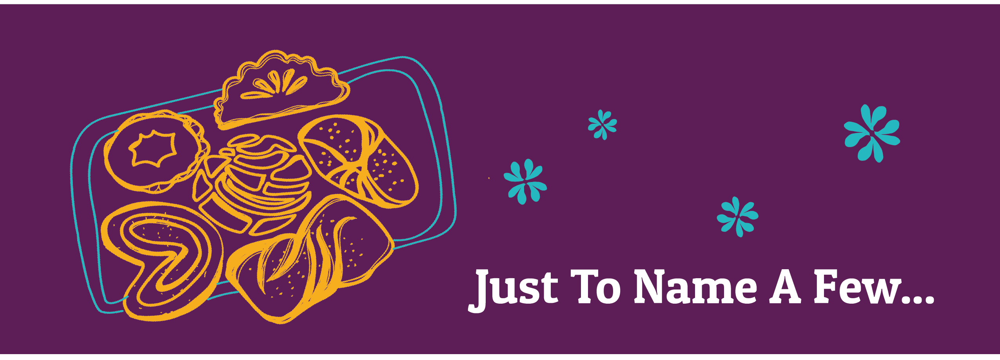

Sweentness Galore
Pan dulce is a sweet bread that, as the name suggests, is prepared with a sweetener. It might be sugar, brown sugar, honey, piloncillo, molasses or anything else. They are chewy, crunchy and flacky and sometimes filled with fruit and nuts. Pan dulce comes in so many forms and flavors that the National Chamber of the Mexican Bakery Industry has registered over 1200 varieties. Now that is a lot of sweets!
Click to learn more of these delicious breads!